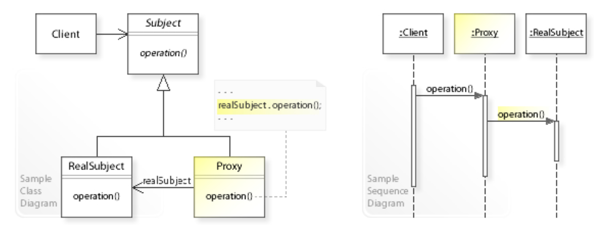

<!DOCTYPE html>
<html>
<head><meta name="generator" content="Hexo 3.8.0">
  <!-- hexo-inject:begin --><!-- hexo-inject:end --><meta charset="utf-8">
  

  
  <title>Proxy Design Pattern | TongTong Shi&#39;s Blog</title>
  <meta name="viewport" content="width=device-width, initial-scale=1, maximum-scale=1">
  <meta name="description" content="1. What is proxy? Definition in Wikipedia is: A proxy is a class functioning as an interface to something else. The proxy could interface to anything: a network connection, a large object in memory,">
<meta name="keywords" content="Design Pattern">
<meta property="og:type" content="article">
<meta property="og:title" content="Proxy Design Pattern">
<meta property="og:url" content="http://yoursite.com/2019/06/25/proxy-design-pattern/index.html">
<meta property="og:site_name" content="TongTong Shi&#39;s Blog">
<meta property="og:description" content="1. What is proxy? Definition in Wikipedia is: A proxy is a class functioning as an interface to something else. The proxy could interface to anything: a network connection, a large object in memory,">
<meta property="og:locale" content="default">
<meta property="og:image" content="http://yoursite.com/2019/06/25/proxy-design-pattern/proxy.png">
<meta property="og:updated_time" content="2019-06-25T18:57:16.817Z">
<meta name="twitter:card" content="summary">
<meta name="twitter:title" content="Proxy Design Pattern">
<meta name="twitter:description" content="1. What is proxy? Definition in Wikipedia is: A proxy is a class functioning as an interface to something else. The proxy could interface to anything: a network connection, a large object in memory,">
<meta name="twitter:image" content="http://yoursite.com/2019/06/25/proxy-design-pattern/proxy.png">
  
    <link rel="alternate" href="/atom.xml" title="TongTong Shi&#39;s Blog" type="application/atom+xml">
  
  
    <link rel="icon" href="/favicon.png">
  
  
    <link href="//fonts.googleapis.com/css?family=Source+Code+Pro" rel="stylesheet" type="text/css">
  
  <link rel="stylesheet" href="/css/style.css"><!-- hexo-inject:begin --><!-- hexo-inject:end -->
</head>
</html>
<body>
  <!-- hexo-inject:begin --><!-- hexo-inject:end --><div id="container">
    <div id="wrap">
      <header id="header">
  <div id="banner"></div>
  <div id="header-outer" class="outer">
    <div id="header-title" class="inner">
      <h1 id="logo-wrap">
        <a href="/" id="logo">TongTong Shi&#39;s Blog</a>
      </h1>
      
    </div>
    <div id="header-inner" class="inner">
      <nav id="main-nav">
        <a id="main-nav-toggle" class="nav-icon"></a>
        
          <a class="main-nav-link" href="/">Home</a>
        
          <a class="main-nav-link" href="/archives">Archives</a>
        
      </nav>
      <nav id="sub-nav">
        
          <a id="nav-rss-link" class="nav-icon" href="/atom.xml" title="RSS Feed"></a>
        
        <a id="nav-search-btn" class="nav-icon" title="Search"></a>
      </nav>
      <div id="search-form-wrap">
        <form action="//google.com/search" method="get" accept-charset="UTF-8" class="search-form"><input type="search" name="q" class="search-form-input" placeholder="Search"><button type="submit" class="search-form-submit">&#xF002;</button><input type="hidden" name="sitesearch" value="http://yoursite.com"></form>
      </div>
    </div>
  </div>
</header>
      <div class="outer">
        <section id="main"><article id="post-proxy-design-pattern" class="article article-type-post" itemscope itemprop="blogPost">
  <div class="article-meta">
    <a href="/2019/06/25/proxy-design-pattern/" class="article-date">
  <time datetime="2019-06-25T16:42:50.000Z" itemprop="datePublished">2019-06-25</time>
</a>
    
  </div>
  <div class="article-inner">
    
    
      <header class="article-header">
        
  
    <h1 class="article-title" itemprop="name">
      Proxy Design Pattern
    </h1>
  

      </header>
    
    <div class="article-entry" itemprop="articleBody">
      
        <h2 id="font-colordodgerblue1-what-is-proxyfont"><a class="markdownIt-Anchor" href="#font-colordodgerblue1-what-is-proxyfont"></a> <font color="dodgerblue">1. What is proxy?</font></h2>
<p><strong>Definition in Wikipedia is:</strong></p>
<div style="background-color: honeydew">A <i>proxy</i> is a class functioning as an interface to something else. The proxy could interface to anything: a network connection, a large object in memory, a file, or some other resource that is expensive or impossible to duplicate. In short, <b>a proxy is a wrapper or agent object that is being called by the client to access the real serving object behind the scenes</b>. Use of the proxy can simply be forwarding to the real object, or can provide additional logic. In the proxy, <i>extra functionality</i> can be provided, for example <b>caching</b> when opeations on the real object are resource intersice, or <b>checking preconditions</b> before operations on the real object are invoked. For the <i>client</i>, usage of a proxy object is <b>similar</b> to using the real object, because <b>both implement the same interface</b>.</div>
<a id="more"></a>
<h2 id="font-colordodgerblue2-what-is-proxy-patternfont"><a class="markdownIt-Anchor" href="#font-colordodgerblue2-what-is-proxy-patternfont"></a> <font color="dodgerblue">2. What is proxy pattern?</font></h2>
<p><font color="mediumslateblue">Proxy pattern provides a surrogate or placeholder for another object to access to it. It is something controlling the access to some resources and it doesn’t change the interface which clients use. That is, insteading of calling the thing we want, in proxy pattern, we call the thing(i.e. proxy) which calls the thing we want. So in proxy pattern, we define a seperate proxy that</font></p>
<ul>
<li>can be used as surrogate for another object and</li>
<li>implements additional functinoality to control the access to this object.</li>
</ul>
<h2 id="font-colordodgerblue3-what-problem-can-proxy-pattern-solvefont"><a class="markdownIt-Anchor" href="#font-colordodgerblue3-what-problem-can-proxy-pattern-solvefont"></a> <font color="dodgerblue">3. What problem can proxy pattern solve?</font></h2>
<ul>
<li>The access to a resource should be controlled.</li>
<li>Additional functionality should be provided when accessing a resource.</li>
</ul>
<h2 id="font-colordodgerblue4-possible-usage-scenariosfont"><a class="markdownIt-Anchor" href="#font-colordodgerblue4-possible-usage-scenariosfont"></a> <font color="dodgerblue">4. Possible usage scenarios?</font></h2>
<ul>
<li><font color="mediumslateblue"><strong>Remote proxy</strong></font>: suggested to be used when you want to access a resource which is remote. Remote resouce coult be different server, different namespace, etc.</li>
<li><font color="mediumslateblue"><strong>Virtual proxy</strong></font>: controls access to a resource that is expensive to create. This is like caching.</li>
<li><font color="mediumslateblue"><strong>Protection proxy</strong></font>: is about access management, controls access based on access rights.</li>
</ul>
<h2 id="font-colordodgerblue5-umlfont"><a class="markdownIt-Anchor" href="#font-colordodgerblue5-umlfont"></a> <font color="dodgerblue">5. UML</font></h2>
<a href="https://en.wikipedia.org/wiki/Proxy_pattern" target="_blank" rel="noopener">wikipedia</a>

<p>In the above UML class diagram, the <code>Proxy</code> class implements the <code>Subject</code> interface so that it can act as substitute for <code>Subject</code> objects. In maintians a <em>reference</em>(<code>realSubject</code>) to the substituted object(<code>RealSubject</code>) so that it can forward requests to it(<code>realSubject.operation()</code>).</p>
<p>The sequence diagram shows the run-time interactions: The <code>Client</code> object works through a <code>Proxy</code> object that controls the access to a <code>RealSubject</code> object. In this example, the <code>Proxy</code> forwards the request to the <code>RealSubject</code>, which performs the <code>request</code>.</p>
<p>In summary,</p>
<ul>
<li><font color="	
ROYALBLUE"><code>Proxy</code> controls the access to th real subject.</font></li>
<li><font color="	
ROYALBLUE"><code>Proxy</code> follows the same interface as the thing it is proxying.</font></li>
<li><font color="	
ROYALBLUE"><code>Proxy</code> doesn’t necessarily have to be passed the real subject upon the initialization (lazy evaluation).</font></li>
</ul>
<h2 id="font-colordodgerblue6-examplefont"><a class="markdownIt-Anchor" href="#font-colordodgerblue6-examplefont"></a> <font color="dodgerblue">6. Example</font></h2>
<p>In this example, the <code>LazyBookParserProxy</code> is used to access an expensive resource <code>BookParser</code>. We first creates an interface <code>IBookParser</code> containing a method <code>getNumberPages()</code>. Then let a concrete class <code>BookParser</code> implements it. Using the <em>proxy pattern</em>, the code of the <code>LazyBookParserProxy</code> avoids multiple loading of the <code>BookParser</code>, accessing it in an expensive manner. <font color="	
ROYALBLUE"> The <em><strong>lazy loading</strong></em> demonstrated in this example is <strong>not</strong> part of the proxy pattern, but is merely an <strong>advantage made possible by the use of the proxy</strong>.</font></p>
<p><strong>codes:</strong></p>
<figure class="highlight cs"><figcaption><span>lang: java</span></figcaption><table><tr><td class="gutter"><pre><span class="line">1</span><br><span class="line">2</span><br><span class="line">3</span><br><span class="line">4</span><br><span class="line">5</span><br><span class="line">6</span><br><span class="line">7</span><br><span class="line">8</span><br><span class="line">9</span><br><span class="line">10</span><br><span class="line">11</span><br><span class="line">12</span><br><span class="line">13</span><br><span class="line">14</span><br><span class="line">15</span><br><span class="line">16</span><br><span class="line">17</span><br><span class="line">18</span><br><span class="line">19</span><br><span class="line">20</span><br><span class="line">21</span><br><span class="line">22</span><br><span class="line">23</span><br><span class="line">24</span><br><span class="line">25</span><br><span class="line">26</span><br><span class="line">27</span><br><span class="line">28</span><br><span class="line">29</span><br><span class="line">30</span><br></pre></td><td class="code"><pre><span class="line">Interface IBookParser &#123;</span><br><span class="line">  <span class="function"><span class="keyword">int</span> <span class="title">getNumberPages</span>(<span class="params"></span>)</span>;</span><br><span class="line">&#125;</span><br><span class="line"></span><br><span class="line">Class BookParser: IBookParser &#123;</span><br><span class="line">  </span><br><span class="line">  <span class="function"><span class="keyword">public</span> <span class="title">BookParser</span> (<span class="params"><span class="keyword">string</span> book</span>)</span> &#123;</span><br><span class="line">  <span class="comment">// expensive parsing    </span></span><br><span class="line">  &#125;</span><br><span class="line"></span><br><span class="line">  <span class="function"><span class="keyword">public</span> <span class="keyword">int</span> <span class="title">getNumberPages</span>(<span class="params"></span>)</span> &#123;...&#125;</span><br><span class="line"></span><br><span class="line">&#125;</span><br><span class="line"></span><br><span class="line">Class LazyBookParserProxy : IBookParser &#123;</span><br><span class="line"> </span><br><span class="line">  <span class="keyword">private</span> BookParser parser = <span class="literal">null</span>;</span><br><span class="line">  <span class="keyword">private</span> <span class="keyword">string</span> book = <span class="literal">null</span>;</span><br><span class="line">  </span><br><span class="line">  <span class="function"><span class="keyword">public</span> <span class="title">LazyBookParserProxy</span>(<span class="params">String book</span>)</span> &#123;</span><br><span class="line">    <span class="keyword">this</span>.book = book;</span><br><span class="line">  &#125;</span><br><span class="line"></span><br><span class="line">  <span class="function"><span class="keyword">public</span> <span class="keyword">int</span> <span class="title">getNumberPages</span>(<span class="params"></span>)</span>&#123;</span><br><span class="line">    <span class="keyword">if</span> (<span class="keyword">this</span>.parser == <span class="literal">null</span>) </span><br><span class="line">      <span class="keyword">this</span>.parser = <span class="keyword">new</span> BookParser(<span class="keyword">this</span>.book);</span><br><span class="line">    <span class="keyword">return</span> <span class="keyword">this</span>.parser.getNumberPages();</span><br><span class="line">  &#125;</span><br><span class="line">&#125;</span><br><span class="line"></span><br></pre></td></tr></table></figure>
      
    </div>
    <footer class="article-footer">
      <a data-url="http://yoursite.com/2019/06/25/proxy-design-pattern/" data-id="cjzbp0nu400s1lsvenrbvbpcd" class="article-share-link">Share</a>
      
      
  <ul class="article-tag-list"><li class="article-tag-list-item"><a class="article-tag-list-link" href="/tags/Design-Pattern/">Design Pattern</a></li></ul>

    </footer>
  </div>
  
    
<nav id="article-nav">
  
    <a href="/2019/06/25/angular-projectIII/" id="article-nav-newer" class="article-nav-link-wrap">
      <strong class="article-nav-caption">Newer</strong>
      <div class="article-nav-title">
        
          Project - Groupbuy App Part III
        
      </div>
    </a>
  
  
    <a href="/2019/06/25/leetcodeQ1009/" id="article-nav-older" class="article-nav-link-wrap">
      <strong class="article-nav-caption">Older</strong>
      <div class="article-nav-title">Complement of Base 10 Integer</div>
    </a>
  
</nav>

  
</article>

</section>
        
          <aside id="sidebar">
  
    
  <div class="widget-wrap">
    <h3 class="widget-title">Tag Cloud</h3>
    <div class="widget tagcloud">
      <a href="/tags/Angular/" style="font-size: 15.42px;">Angular</a> <a href="/tags/Array/" style="font-size: 17.5px;">Array</a> <a href="/tags/BFS/" style="font-size: 16.67px;">BFS</a> <a href="/tags/BST/" style="font-size: 12.5px;">BST</a> <a href="/tags/Backtracking/" style="font-size: 16.25px;">Backtracking</a> <a href="/tags/Binary-Search/" style="font-size: 15.83px;">Binary Search</a> <a href="/tags/Binary-Search-Tree/" style="font-size: 10.42px;">Binary Search Tree</a> <a href="/tags/Bucket-Sort/" style="font-size: 10.83px;">Bucket Sort</a> <a href="/tags/Cantor-Unfold/" style="font-size: 10px;">Cantor Unfold</a> <a href="/tags/Cat1-Cat1-1/" style="font-size: 10px;">Cat1,Cat1.1</a> <a href="/tags/Cat2/" style="font-size: 10px;">Cat2</a> <a href="/tags/Cat3/" style="font-size: 10px;">Cat3</a> <a href="/tags/Combination/" style="font-size: 12.92px;">Combination</a> <a href="/tags/Counting-Sort/" style="font-size: 10.83px;">Counting Sort</a> <a href="/tags/DFS/" style="font-size: 17.92px;">DFS</a> <a href="/tags/DP/" style="font-size: 19.58px;">DP</a> <a href="/tags/Data-Structure/" style="font-size: 10px;">Data Structure</a> <a href="/tags/Database/" style="font-size: 11.25px;">Database</a> <a href="/tags/Design/" style="font-size: 15.42px;">Design</a> <a href="/tags/Design-Pattern/" style="font-size: 10.83px;">Design Pattern</a> <a href="/tags/Disjoint-Set/" style="font-size: 14.17px;">Disjoint Set</a> <a href="/tags/Divide-and-Conquer/" style="font-size: 10px;">Divide and Conquer</a> <a href="/tags/Graph/" style="font-size: 10px;">Graph</a> <a href="/tags/Greedy/" style="font-size: 18.75px;">Greedy</a> <a href="/tags/HashTable/" style="font-size: 18.33px;">HashTable</a> <a href="/tags/Heap/" style="font-size: 12.92px;">Heap</a> <a href="/tags/Integer-Overflow/" style="font-size: 10.42px;">Integer Overflow</a> <a href="/tags/Java-Baisc/" style="font-size: 10px;">Java Baisc</a> <a href="/tags/Java-Basic/" style="font-size: 11.67px;">Java Basic</a> <a href="/tags/KMP/" style="font-size: 10px;">KMP</a> <a href="/tags/KMP-algorithm/" style="font-size: 10px;">KMP algorithm</a> <a href="/tags/LeetCode/" style="font-size: 20px;">LeetCode</a> <a href="/tags/Linked-List/" style="font-size: 11.25px;">Linked List</a> <a href="/tags/LinkedList/" style="font-size: 10.83px;">LinkedList</a> <a href="/tags/LintCode/" style="font-size: 16.25px;">LintCode</a> <a href="/tags/Math/" style="font-size: 19.17px;">Math</a> <a href="/tags/Memorization/" style="font-size: 11.67px;">Memorization</a> <a href="/tags/Merge-Sort/" style="font-size: 10px;">Merge Sort</a> <a href="/tags/Monotonous-Stack/" style="font-size: 14.17px;">Monotonous Stack</a> <a href="/tags/Multiplication/" style="font-size: 10.42px;">Multiplication</a> <a href="/tags/MyBatis/" style="font-size: 12.5px;">MyBatis</a> <a href="/tags/MySQL/" style="font-size: 10.42px;">MySQL</a> <a href="/tags/Number-Theoretic-Algorithm/" style="font-size: 10px;">Number-Theoretic Algorithm</a> <a href="/tags/OOD/" style="font-size: 10px;">OOD</a> <a href="/tags/Partition/" style="font-size: 11.25px;">Partition</a> <a href="/tags/Permutation/" style="font-size: 10.83px;">Permutation</a> <a href="/tags/Project/" style="font-size: 15px;">Project</a> <a href="/tags/PropertyPlaceholderConfigurer/" style="font-size: 10px;">PropertyPlaceholderConfigurer</a> <a href="/tags/Queue/" style="font-size: 10px;">Queue</a> <a href="/tags/Quick-Select/" style="font-size: 10px;">Quick Select</a> <a href="/tags/Recursion/" style="font-size: 12.08px;">Recursion</a> <a href="/tags/Recurtion/" style="font-size: 10px;">Recurtion</a> <a href="/tags/Reflection/" style="font-size: 10px;">Reflection</a> <a href="/tags/SQL/" style="font-size: 10.42px;">SQL</a> <a href="/tags/SSM/" style="font-size: 12.08px;">SSM</a> <a href="/tags/Sliding-Window/" style="font-size: 13.75px;">Sliding Window</a> <a href="/tags/Sort/" style="font-size: 13.33px;">Sort</a> <a href="/tags/Spring/" style="font-size: 12.5px;">Spring</a> <a href="/tags/Spring-Boot/" style="font-size: 12.92px;">Spring Boot</a> <a href="/tags/Spring-Security/" style="font-size: 10.42px;">Spring Security</a> <a href="/tags/SpringMVC/" style="font-size: 12.08px;">SpringMVC</a> <a href="/tags/Stack/" style="font-size: 17.08px;">Stack</a> <a href="/tags/String/" style="font-size: 16.25px;">String</a> <a href="/tags/Sweep-Line/" style="font-size: 10.42px;">Sweep Line</a> <a href="/tags/Thread/" style="font-size: 11.67px;">Thread</a> <a href="/tags/Top-Interview-Qs/" style="font-size: 11.25px;">Top Interview Qs</a> <a href="/tags/Topology-Sorting/" style="font-size: 11.67px;">Topology Sorting</a> <a href="/tags/Tree/" style="font-size: 18.75px;">Tree</a> <a href="/tags/Trie/" style="font-size: 11.25px;">Trie</a> <a href="/tags/Two-Pointers/" style="font-size: 16.25px;">Two Pointers</a> <a href="/tags/Union-Find/" style="font-size: 14.58px;">Union Find</a> <a href="/tags/backtracking/" style="font-size: 10.42px;">backtracking</a> <a href="/tags/gcd/" style="font-size: 10px;">gcd</a>
    </div>
  </div>

  
    
  <div class="widget-wrap">
    <h3 class="widget-title">Archives</h3>
    <div class="widget">
      <ul class="archive-list"><li class="archive-list-item"><a class="archive-list-link" href="/archives/2019/08/">August 2019</a></li><li class="archive-list-item"><a class="archive-list-link" href="/archives/2019/07/">July 2019</a></li><li class="archive-list-item"><a class="archive-list-link" href="/archives/2019/06/">June 2019</a></li><li class="archive-list-item"><a class="archive-list-link" href="/archives/2019/05/">May 2019</a></li><li class="archive-list-item"><a class="archive-list-link" href="/archives/2019/04/">April 2019</a></li></ul>
    </div>
  </div>


  
    
  <div class="widget-wrap">
    <h3 class="widget-title">Recent Posts</h3>
    <div class="widget">
      <ul>
        
          <li>
            <a href="/2019/08/14/sql-notes-3/">Study Notes - SQL &amp; MySQL &amp; MyBatis (2)</a>
          </li>
        
          <li>
            <a href="/2019/08/12/sql-nodes-2/">Study Notes - SQL &amp; MySQL &amp; MyBatis (1)</a>
          </li>
        
          <li>
            <a href="/2019/08/12/sql-notes-1/">Study Notes - SQL &amp; MySQL &amp; MyBatis</a>
          </li>
        
          <li>
            <a href="/2019/08/09/leetcodeQ1131/">Maximum of Absolute Value Expression</a>
          </li>
        
          <li>
            <a href="/2019/08/09/leetcodeQ108/">Convert Sorted Array to Binary Search Tree</a>
          </li>
        
      </ul>
    </div>
  </div>

  
</aside>
        
      </div>
      <footer id="footer">
  
  <div class="outer">
    <span id="footer-info" class="inner">
      &copy; 2019 Tong Shi<br>
      Powered by <a href="http://hexo.io/" target="_blank">Hexo</a>
    </span>
  </div>
  <div id="analysis" style="text-align:center;">
  <span id="busuanzi_container_site_uv">Total visitors: <span id="busuanzi_value_site_uv"></span>persion-time</span>
	<span id="busuanzi_container_site_pv">
      Total visits: <span id="busuanzi_value_site_pv"></span> times</span>
  </div>
</footer>

<script async src="//busuanzi.ibruce.info/busuanzi/2.3/busuanzi.pure.mini.js">
</script>
    </div>
    <nav id="mobile-nav">
  
    <a href="/" class="mobile-nav-link">Home</a>
  
    <a href="/archives" class="mobile-nav-link">Archives</a>
  
</nav>
    

<script src="//ajax.googleapis.com/ajax/libs/jquery/2.0.3/jquery.min.js"></script>


  <link rel="stylesheet" href="/fancybox/jquery.fancybox.css">
  <script src="/fancybox/jquery.fancybox.pack.js"></script>


<script src="/js/script.js"></script>


  </div>
<script type="text/x-mathjax-config">
    MathJax.Hub.Config({
        tex2jax: {
            inlineMath: [ ["$","$"], ["\\(","\\)"] ],
            skipTags: ['script', 'noscript', 'style', 'textarea', 'pre', 'code'],
            processEscapes: true
        }
    });
    MathJax.Hub.Queue(function() {
        var all = MathJax.Hub.getAllJax();
        for (var i = 0; i < all.length; ++i)
            all[i].SourceElement().parentNode.className += ' has-jax';
    });
</script>
<script src="http://cdn.mathjax.org/mathjax/latest/MathJax.js?config=TeX-AMS-MML_HTMLorMML"></script><!-- hexo-inject:begin --><!-- Begin: Injected MathJax -->
<script type="text/x-mathjax-config">
  MathJax.Hub.Config("");
</script>

<script type="text/x-mathjax-config">
  MathJax.Hub.Queue(function() {
    var all = MathJax.Hub.getAllJax(), i;
    for(i=0; i < all.length; i += 1) {
      all[i].SourceElement().parentNode.className += ' has-jax';
    }
  });
</script>

<script type="text/javascript" src="//cdn.mathjax.org/mathjax/latest/MathJax.js?config=TeX-AMS-MML_HTMLorMML">
</script>
<!-- End: Injected MathJax -->
<!-- hexo-inject:end -->
</body>
</html>